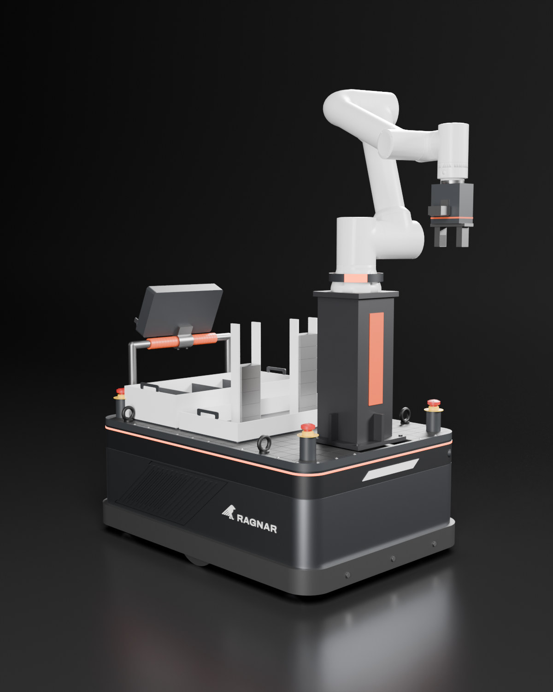
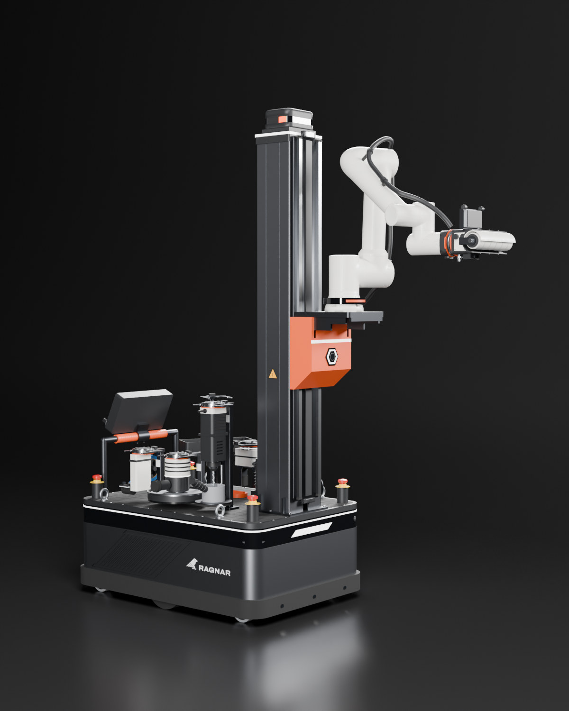

Ragnar Robotics is my company; we build robot technicians for repetitive work. Our first robot, Ragnar M, keeps CNC machines running after the shift ends. It drives to the machine, loads the next blank, starts the cycle and unloads the finished part, and it swaps build plates on 3D printers. A Fairino FR5 arm sits on a fixed riser, and stock and finished parts ride in cassettes on its deck.
Ragnar C shares the same base and arm, adds a two stage mast, and paints interior walls up to 12 ft and ceilings up to 13 ft. I designed both robots in Fusion as buildable parts. More at ragnarrobotics.com.

